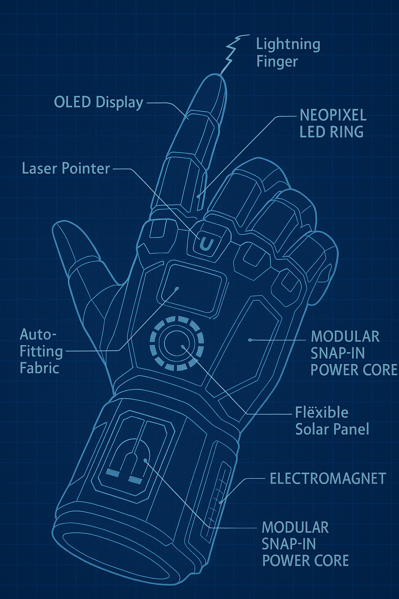

Vanta Voice Assistant

Vanta Exoskin Glove

Meme Thought Helmet
Minecraft IRL Block Printer

Eye of Judgement
AIRSLAP Bracelet
Overkill Cat Collar
The MOCE Control Room

Chaos Test Mode

Dimensional Breach Glasses
Vanta's Eye Cam

Dual-HUD Helmet

Japan-Dome-XD
Precision Assembly Arm

Unauthorized Floof Detector